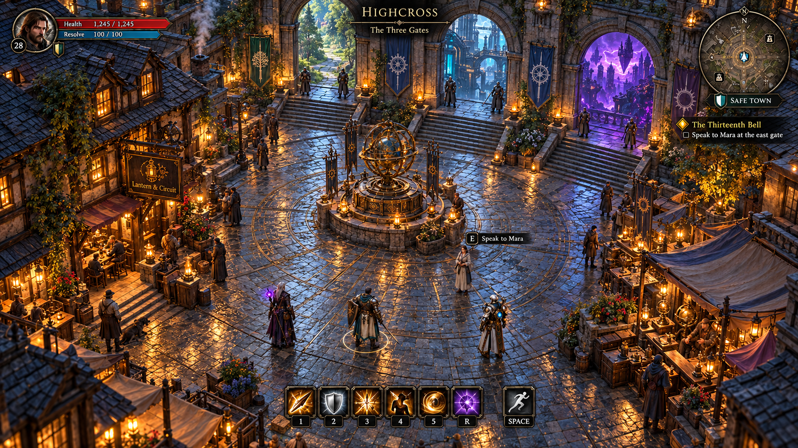

A world with a production plan.
Twelve guilds, three realms, and a concrete path from concept art to a playable browser world.
Specification · awaiting reviewTHREEFOLD now has a production specification covering the guilds, quests, maps, interface, combat rules, assets, sound and multiplayer architecture. Every guild stays in the first complete chapter. The starting Adventurer remains a separate introduction to the world.


The first chapter, The Missing Hour, follows three realm adventures from Highcross. A later chapter reaches the Crown of Winter, Glass Megacity and Unwritten Sea. Both are visible in the catalogue, so a delivery checkpoint cannot quietly erase the larger world.
The next practical test is deliberately small: a town corner, a wilderness route, live controls and HUD, and humanoid, mechanical and nonhuman bodies running in the browser. That scene must demonstrate the intended lighting, animation, combat readability and multiplayer safety before asset production expands.
The plan records costs in provider credits and treats the proposed 48-hour build as an experiment. Neither paid generation nor that build has started. The current images are targets; no gameplay footage exists yet.